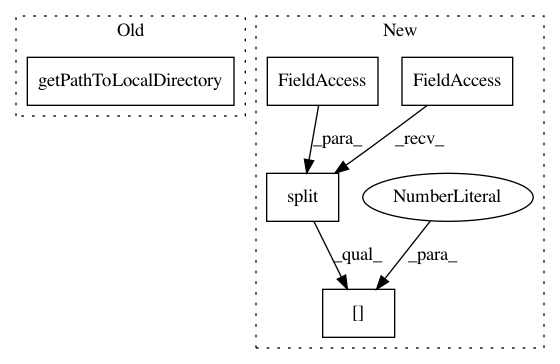

7178c6dd5fc8b7b05d21e52222e88165737522b4,ilastik/applets/labeling/labelingGui.py,LabelingGui,initLabelUic,#LabelingGui#Any#,126
Before Change
_labelControlUi.labelListModel.dataChanged.connect(onDataChanged)
// Initialize the arrow tool button with an icon and handler
iconPath = getPathToLocalDirectory() + "/icons/arrow.jpg"
arrowIcon = QIcon(iconPath)
_labelControlUi.arrowToolButton.setIcon(arrowIcon)
_labelControlUi.arrowToolButton.setCheckable(True)
After Change
_labelControlUi.paintToolButton.clicked.connect( lambda checked: self.handleToolButtonClicked(checked, Tool.Paint) )
// Initialize the erase tool button with an icon and handler
eraserIconPath = os.path.split(__file__)[0] + "/icons/eraser.png"
eraserIcon = QIcon(eraserIconPath)
_labelControlUi.eraserToolButton.setIcon(eraserIcon)
_labelControlUi.eraserToolButton.setCheckable(True)
In pattern: SUPERPATTERN
Frequency: 3
Non-data size: 5
Instances
Project Name: ilastik/ilastik
Commit Name: 7178c6dd5fc8b7b05d21e52222e88165737522b4
Time: 2012-08-16
Author: bergs@janelia.hhmi.org
File Name: ilastik/applets/labeling/labelingGui.py
Class Name: LabelingGui
Method Name: initLabelUic
Project Name: ilastik/ilastik
Commit Name: 3dec050502b279fb77bc8a27a006b3babe8f81cf
Time: 2012-04-27
Author: bergs@janelia.hhmi.org
File Name: ilastik-shell/applets/featureSelection/featureSelectionGui.py
Class Name: FeatureSelectionGui
Method Name: initAppletDrawerUic
Project Name: ilastik/ilastik
Commit Name: 3dec050502b279fb77bc8a27a006b3babe8f81cf
Time: 2012-04-27
Author: bergs@janelia.hhmi.org
File Name: ilastik-shell/applets/featureSelection/featureSelectionGui.py
Class Name: FeatureSelectionGui
Method Name: initCentralUic